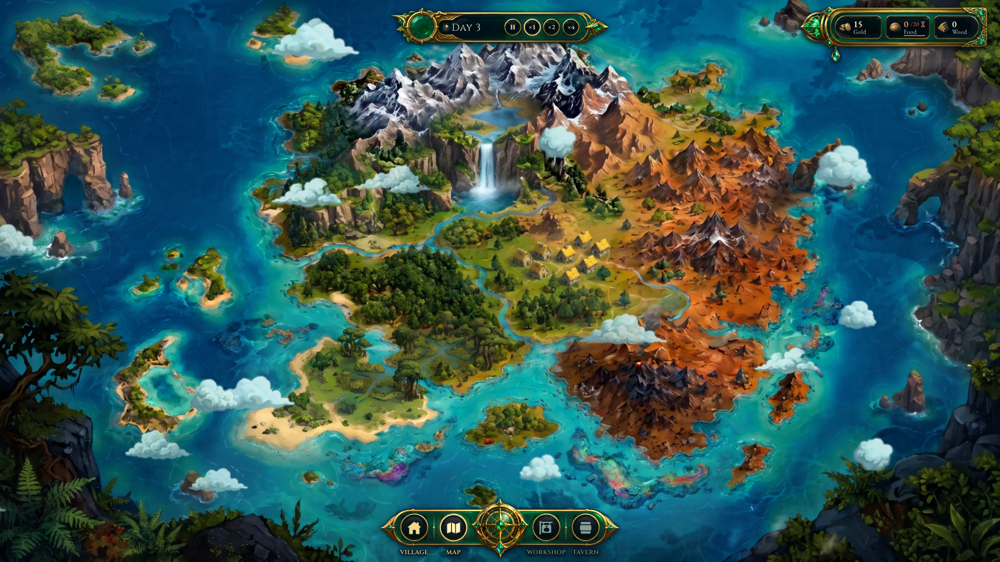

Wanderlust: Triumph — un videogioco indie costruito da una pipeline multi-AI
Proposta di collaborazione ricerca · Fausto Boni, sviluppatore indipendente (Carpi, MO)

Il mondo di gioco in esecuzione (build corrente, /game): mappa dipinta, HUD, gestione insediamento e spedizioni.
Il progetto
Wanderlust: Triumph è un videogioco fantasy di strategia e gestione (roguelite: gestione insediamento, roster di ~20 eroi, spedizioni con perdita permanente), sviluppato per il web (TypeScript/PixiJS) e destinato alla distribuzione commerciale. Il progetto è attualmente candidato alla call «Prima Pubblicazione» del publisher Tambù Digital.
Tutto il gioco — codice, arte, documentazione, QA — è prodotto da un solo sviluppatore attraverso una pipeline di orchestrazione multi-AI.
Il processo (il vero oggetto di interesse)
Il progetto utilizza Mind Weaver, un'infrastruttura di sviluppo agentico costruita attorno al gioco: agenti CLI multipli e provider AI (API e web) orchestrati con governance documentale canonica (ledger di requisiti, decision log, skill invocabili, contratti di chiusura verificabili), produzione di arte AI guidata e integrata in pipeline, e verifica runtime automatizzata headless. È un caso reale e funzionante di produzione creativa «AI-augmented» end-to-end, con mesi di log e artefatti.
Cosa offro
- Caso di studio aperto: accesso al repository, ai log di sessione e alla documentazione di processo per ricerca (HCI, game studies, software engineering, studi sull'AI).
- Guest lecture / seminari: "sviluppo di un videogioco con agenti AI" con demo dal vivo.
- Supervisione tesi: temi disponibili — bilanciamento, UX, telemetria, produzione arte AI, metodologia agentica.
- Dati reali: metriche di sviluppo, costi, fallimenti e pattern del lavoro multi-agente.
Cosa cerco
- Un incontro informale (30 minuti) per valutare interesse reciproco.
- Una relazione formale di collaborazione (lettera/convenzione): mi consentirebbe l'accesso a Start Cup Emilia-Romagna / PNI, che richiedono legame con un ente di ricerca.
- Valutare co-candidature (Erasmus+, Horizon Europe, bandi regionali ICC) come partner tecnico.
Fausto Boni · Carpi (MO) · licaone12@gmail.com · +39 392 0044477 · Portfolio/build del gioco e materiali disponibili su richiesta.